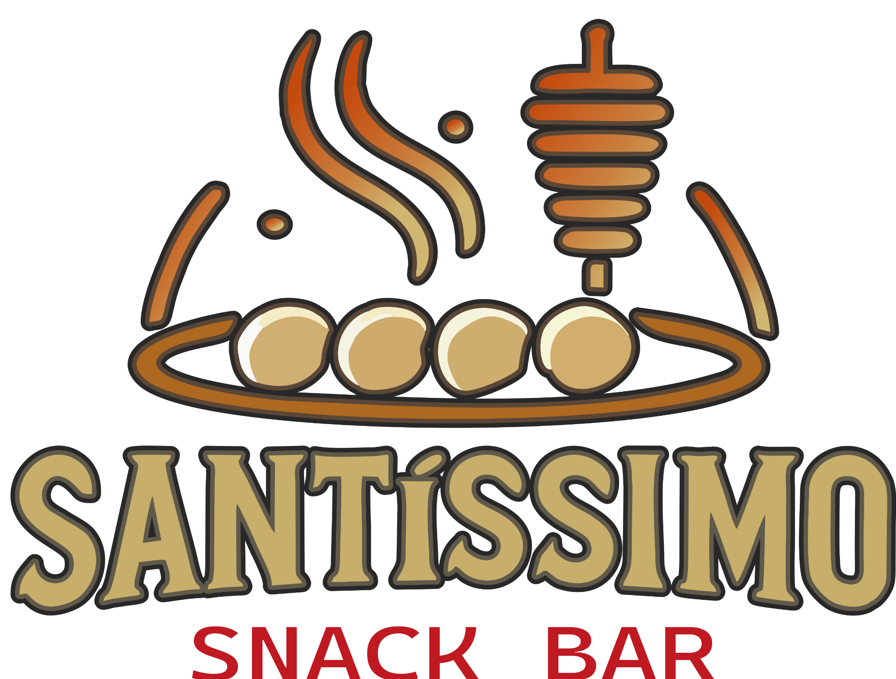
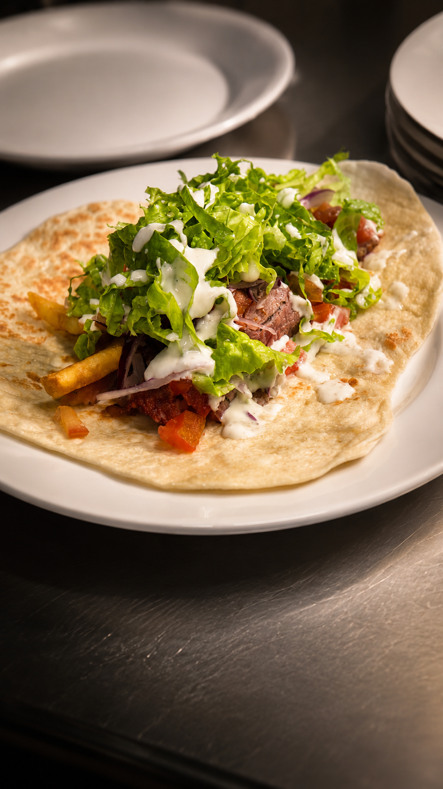

STREET FOOD NO ESPETO VERTICAL
Uma tradição do Oriente Médio reinterpretada em Vitória.
O Santíssimo nasceu do encontro entre a tradição libanesa, a cultura da street food e a hospitalidade brasileira.
Inspirados nas ruas do Oriente Médio, produzimos diariamente nosso pão artesanal, assamos carnes lentamente no espeto vertical e valorizamos ingredientes frescos para criar uma experiência única.
Começamos pelo shawarma, mas a nossa proposta é maior: construir uma cozinha viva, em constante movimento e aberta a novas descobertas gastronômicas.
Ao lado da tradicional loja da Cachaça Santa Terezinha surgiu uma brincadeira que acabou se tornando parte da nossa identidade:
Hoje, o nome representa acolhimento, tradição e a vontade de reunir pessoas ao redor da boa comida.
O shawarma é uma das comidas de rua mais tradicionais do Oriente Médio e um dos grandes símbolos da gastronomia libanesa.
Carnes marinadas em especiarias são assadas lentamente em um espeto vertical e servidas em pão artesanal produzido diariamente.
No Santíssimo, essa tradição ganha uma interpretação contemporânea.

Frango, carne bovina ou misto.
Alface, tomate, cebola roxa, batata frita e molho alho ou barbecue.
Pão artesanal da casa servido com molho pesto.
Banoffee ou Nutella com morango.
Preparadas no espeto vertical e servidas no prato.
Bovina R$20 | Frango R$15 | Mista R$18
Cada detalhe importa. Do pão produzido diariamente às carnes selecionadas e assadas no espeto vertical, tudo é preparado com cuidado para entregar uma experiência única de street food.
Uma cozinha viva está sempre em movimento.
Em breve: bolinhos de salmão, polvo, porco, boi e frango.
Experiências sazonais e limitadas.
É necessário consultar a disponibilidade e quando acontecerão.
Cordeiro, lula, lombo de meca, salmão e porco.
Rua Licínio dos Santos Conte, 51 - Loja 32 | Vitória - ES
WhatsApp: (27) 99818-9678
@santissimosnackbar